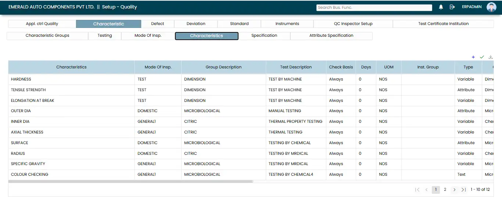

<div data-category="Quality control Management" data-title="Specification" data-updated="December 01, 2025" data-contributors="RoadmapIT" data-breadcrumb="Home,Quality control Management,Specification">
  <div class="page-content">
    <p>The Quality specifications can be defined in this screen. Specifications can be added, modified, and disabled as required.</p>

    <h5>Navigation path:</h5>
    <p class="fs-6">Quality Control \ Setup \ Setup - Quality</p>
    
    <!-- Create Specification -->
    <h2>Specification:</h2>
    <ul style="list-style-type: none; align-content: center">
      <li class="mouse-icon">Click the add icon to create a new Specification.</li>
      <li class="mouse-icon">Enter the Specification.</li>
      <li class="mouse-icon">Enter the External Specification Description.</li>
      <li class="mouse-icon">
        Click
        <i class="bi bi-check-lg fs-4 mx-1 text-success"></i>
        to save.
      </li>
    </ul>

    <!-- Modify Specification -->
    <h2>Modify Specifications:</h2>
    <ul style="list-style-type: none; align-content: center">
      <li class="mouse-icon">Select the required Specification.</li>
      <li class="mouse-icon">Make the necessary changes.</li>
      <li class="mouse-icon">
        Click
        <i class="bi bi-check-lg fs-4 mx-1 text-success"></i>
        to save.
      </li>
      <li class="mouse-icon">Modification is applicable only before transactions are created.</li>
    </ul>

    <!-- Disable Specification -->
    <h2>Disable Specifications:</h2>
    <ul style="list-style-type: none; align-content: center">
      <li class="mouse-icon">Only unused Specifications can be disabled.</li>
      <li class="mouse-icon">Select the Specification.</li>
      <li class="mouse-icon">Disable the Active flag.</li>
    </ul>
  </div>
</div>